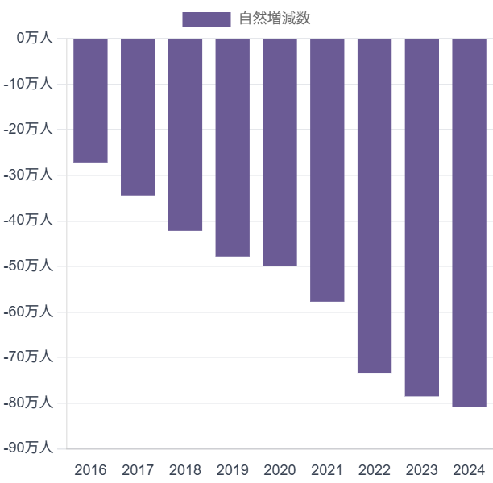

避けられない現実：加速する人口の自然減
日本の人口は、出生数の継続的な減少と高齢化による死亡数の増加という二重の圧力により、加速的な「自然減」の局面に突入しています。
-808,871人
2024年 年間自然増減
広がる亀裂：出生数 vs 死亡数
年々深刻化する人口自然減
家族形成の揺らぎ
パンデミックの影
連鎖する帰結：経済と社会へのインパクト
💰
社会保障の圧迫
- 2040年度の国民医療費は79兆円に達すると予測
- 現役世代の減少と高齢者の増加
📉
賃金の停滞
- 労働力不足にも関わらず実質賃金は停滞
- 経済的不安定が出生意欲を削ぐ
🏢
東京ブラックホール
- 東京の合計特殊出生率は全国最低の0.99
- 地方の過疎化と都市での少子化が同時に進行
新たな羅針盤：未来への戦略的転換
旧来の目標：人口反転
→
新たな目標：強靭な適応
提言
🏆
成功の再定義
- 国の豊かさを「規模」から「質」へ転換
- 一人当たり生産性やQOLを重視
🚀
生産性への投資
- AIやロボティクスへの投資を加速
- ジェンダー平等の徹底による人的資本の最大化
🏙️
社会契約の再設計
- 「コンパクトシティ」の推進
- 人生100年時代に対応した柔軟な社会システムを構築